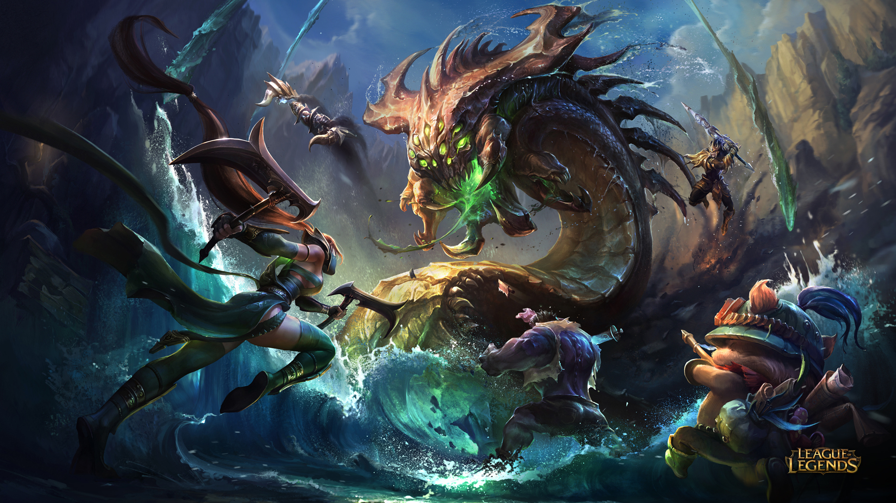
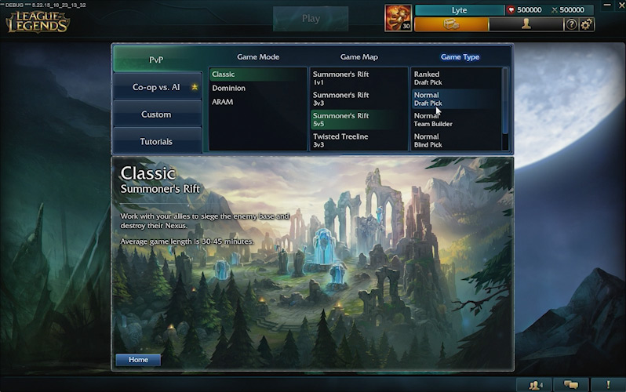

Como essa rota é a mais isolada do resto do mapa, os campeões dessa rota tem o dever de farmar para fazer seus itens e se preparar para as batalhas em equipe, alguns dos campeões dessa rota também são ótimos campeões para levar torres enquanto seu time enfrenta os 5 inimigos em uma rota alternativa, e há também os tipos que são bons em combates de 1 contra 1 muitas vezes são usados para punir o começo de jogo de um campeão que precise farmar para acumular seus itens e pegar seu pico de poder.
É a rota encarregada de ajudar seus companheiros de equipe e garantir o controle de visão nas partes de selva do mapa, o dever dessa rota é, basicamente, ajudar suas rotas a obterem vantagens contra seus inimigos, além disso o jungle é o jogador mais importante do mapa em questão de objetivos globais.
A rota central do jogo que tem como objetivo infligir pressão no mapa inteiro e ajudar o jungle em possiveis rotações, além disso são encarregados de causar dano e assasinar campeões importantes do time inimigo.
Encontrado na rota inferior junto de seu suporte, o objetivo do atirador é simples, ele deve farmar e se preparar para as futuras lutas com o intuito de causar maior dano possível e também de se posicionar de uma maneira em que ficará seguro e conseguirá infligir mais dano.
O objetivo do suporte é proteger seu atirador enquanto ele está farmando para adquirir seus itens, além disso tem a obrigação de garantir a visão do mapa. A posição de suporte embora não pareça ser muito importante, na verdade ela é a posição mais importante durante a fase de rotas para o seu atirador, pois é o suporte que irá fazer com que seu atirador se mantenha com segurança na rota, e assim cresça.
As partidas são dividas entre 2 modos como por exemplo: Normal e Ranqueada, na qual as partidas normais você só ganha o dinheiro do jogo e as ranqueadas como o nome já diz te dão rank, que no League of Legends é chamado mais especificamente de elo. Geralmente as partidas são jogadas em apenas um mapa, o mapa clássico de "Summoner's Rift", neste mapa, 10(5x5) jogadores batalham opondo suas mentes umas as outras para garantir a vitória, conquistando objetivos e garantindo abates.

Além do desenvolvimento dentro da partida, existem outros fatores que devem ser escolhidos antes do jogo, que no caso desse jogo se chamam runas e talentos, esses fatores impactam diretamente no seu jogo, eles irão te garantir mais vida, dano, velocidade, defesa, etc.